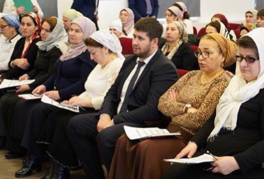

Центр инклюзивного образования

Ст. преподаватель центра
Ст. преподаватель центра
Теучеж Нуриет Юнусовна
эл. адрес:
nuretnuret27@mail.ru
Цель работы
научно-методическое обеспечение условий для формирования и развития инклюзивного образования в регионе и оказание образовательным учреждениям республики содействия в социализации детей с ограниченными возможностями здоровья.
Основные задачи центра
- развитие профессиональной компетентности педагогов в области инклюзивного образования и методическое обеспечение их деятельности
- научно-методическая поддержка образовательных учреждений, реализующих инклюзивную практику
- изучение, обобщение, пропаганда, распространение и внедрение опыта инклюзивного образования в регионе
- мониторинг развития инклюзивных процессов в образовательных учреждениях республики
Методическая тема Центра:
«Теоретико-методические аспекты обеспечения повышения квалификации педагогических работников в условиях введения ФГОС ОВЗ»
Приоритетные направления деятельности Центра:
- нормативно-правовое обеспечение реализации федеральных государственных образовательных стандартов для детей с ограниченными возможностями здоровья в условиях общеобразовательной и специальной (коррекционной) школы
- методическая поддержка и сопровождение образовательных учреждений, реализующих адаптированные образовательные программы
- внедрение эффективных организационно-административных моделей инклюзивных школ
- современные здоровьесберегающие технологии в образовании детей с особыми образовательными потребностями
- распространение передового педагогического опыта
- профессиональная подготовка специалистов в области инклюзивного образования, популяризация идеи инклюзивного образования в российском обществе
- организация и содержание психолого-педагогического сопровождения детей с особыми образовательными потребностями в процессе обучения и воспитания
- психолого-педагогическое диагностирование достижений детей с особыми образовательными потребностями
Программы
- Использование межпредметных технологий в обучении детей с ОВЗ(36ч)
- Использование межпредметных технологий в обучении детей с ОВЗ(72ч)
- Методология и технология реализации ФГОС НОО ОВЗ и ФГОС О У/О в условиях общеобразовательной и специальной (коррекционной) школы
- Реализация системы профессиональной ориентации и мотивации обучающихся с инвалидностью в процессе профессионального обучения через организацию системы конкурсов профессионального мастерства АБИЛИМПИКС
- Методология и технология реализации ФГОС НОО ОВЗ И ФГОС О У\О в условиях общеобразовательной и специальной (коррекционной) школы.
- Использование инновационных методов, средств и технологий с целью повышения мотивации и качества образования детей с ОВЗ.
- Организация предпрофессиональной подготовки детей-инвалидов и детей с ОВЗ в современных условиях.
Методические рекомендации
- Методические рекомендации по организации получения образования детьми с ОВЗ и/или инвалидностью в общеобразовательных организациях Чеченской Республике в 2018-2019 учебном году
- Дорожная карта введения ФГОС НОО обучающихся с ограниченными возможностями здоровья и ФГОС образования обучающихся с умственной отсталостью (интеллектуальными нарушениями)